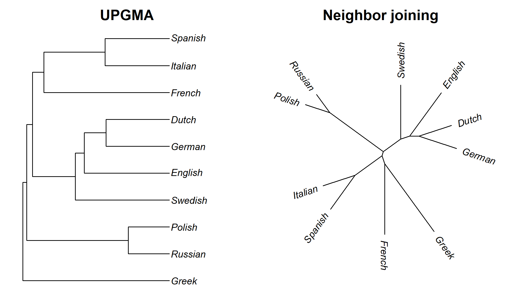
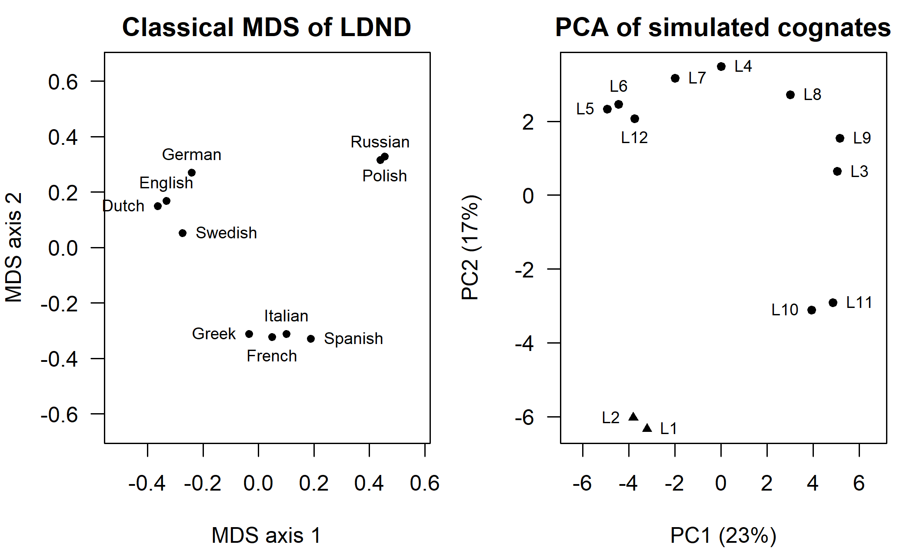
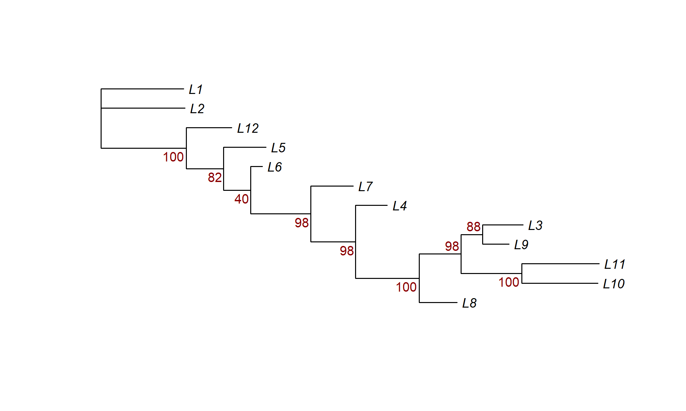
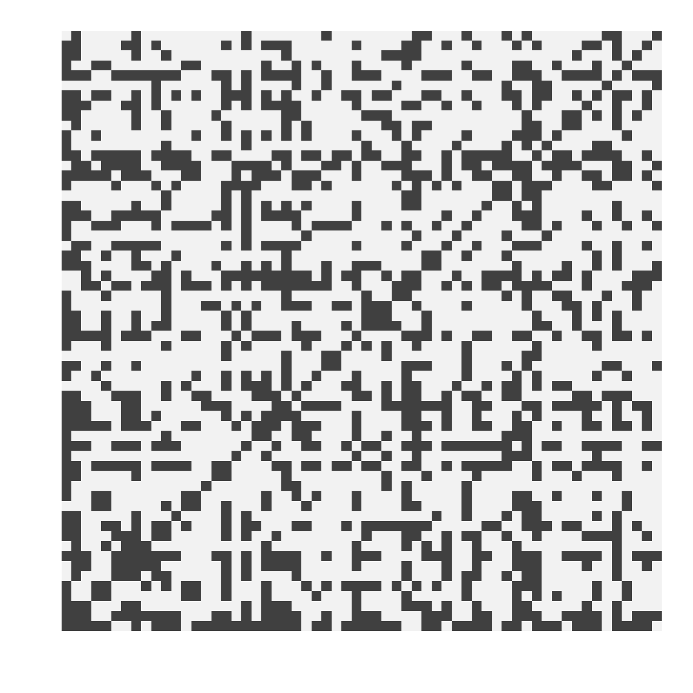

Chapter 4 Distance and Parsimony Methods
How can a table of words, or of cognate judgements, be turned into a tree? The two oldest computational answers are distance methods, which first compress the data into a table of pairwise dissimilarities between languages and then fit a tree to that table, and parsimony methods, which work directly on characters and prefer the tree that requires the fewest changes. Both were developed in biology in the 1960s and adopted in linguistics long before model-based methods became common, and both remain useful: distance methods because they are fast enough for thousands of languages and can be applied to raw word forms without cognate judgements, and parsimony because its logic of shared innovations is close to the reasoning of the comparative method. This chapter explains how they work, what they assume, and why their weaknesses, above all long-branch attraction, motivate the model-based methods of Chapters 5 and 6.
After reading this chapter you should be able to:
- compute lexicostatistical, Hamming, Jaccard, corrected and Levenshtein-based (LDN, LDND) distances between languages, and explain what each measures and fails to measure;
- state the four-point and three-point conditions and explain why UPGMA, unlike neighbor joining, is misled by unequal rates of change;
- build and compare distance trees in R with
upgma(),nj(),bionj()andfastme.bal(), and explore distance matrices with MDS and PCA (cmdscale(),isoMDS(),prcomp()) without over-reading them; - explain the parsimony criterion, compute parsimony scores with Fitch and Sankoff costs, and match cost schemes (Wagner, Camin–Sokal, Dollo) to kinds of linguistic characters;
- search for most parsimonious trees, and interpret consistency and retention indices and bootstrap support, including their limits for cognate data;
- explain character compatibility and the four-gamete test, and their role in the Indo-European work of Ringe, Warnow and Taylor;
- explain long-branch attraction and why agreement with an accepted classification is not, on its own, validation of a method.
4.1 Two ways to build a tree
Any tree-building method has to answer two questions. The first is what information it uses. Distance methods reduce a data matrix \(D\) of languages by characters to a symmetric matrix of pairwise distances \(d_{ij}\), one number for each pair of languages, and discard everything else. Character-based methods, which include parsimony, likelihood and Bayesian inference, use the full matrix: they ask how each individual character (each cognate set, each sound change, each structural feature) could have evolved along the branches of a candidate tree. The distinction matters because the reduction to pairwise distances loses information. Two pairs of languages can have the same distance for quite different reasons, and a distance matrix cannot record which particular cognate sets are shared by which subsets of languages.
The second question is whether the method follows a fixed recipe or optimizes a criterion. Algorithmic (or clustering) methods such as UPGMA and neighbor joining apply a sequence of steps that terminates in a single tree; they never compare alternative trees explicitly. Optimality-criterion methods define a score for every possible tree, such as the number of changes required (parsimony), the sum of branch lengths (minimum evolution) or the probability of the data (likelihood), and then search for the tree with the best score. Because the number of trees grows super-exponentially with the number of languages (Chapter 2), optimality-criterion methods require heuristic search, and the tree they return is only as good as the search.
Table 4.1 places the methods of this and the next two chapters in this two-way scheme.
| Algorithm | Optimality criterion | |
|---|---|---|
| Distances | UPGMA, WPGMA, neighbor joining, BIONJ | least squares (Fitch–Margoliash), minimum evolution, balanced minimum evolution (FastME) |
| Characters | (stepwise addition, used to build starting trees) | maximum parsimony, maximum compatibility, maximum likelihood; Bayesian inference (which samples rather than optimizes) |
A third distinction, between methods that rest on an explicit probabilistic model of change and methods that do not, cuts across this table. Distance corrections and the least-squares criterion can be motivated by models; parsimony and compatibility were developed without them, and their statistical behavior was only worked out later (Felsenstein 1978a, 2004). We return to this point at the end of the chapter.
4.2 From word lists to distances
4.2.1 Lexicostatistical distances from cognate judgements
The simplest linguistic distance is the one that lexicostatistics has used since the 1950s (Swadesh 1955; Lees 1953). Take a list of \(m\) basic meanings (a Swadesh list, Chapter 3), decide for each meaning whether the words in languages \(i\) and \(j\) are cognate, and compute the proportion of meanings for which they are: Here \(s_{ij}\) is the proportion of shared cognates (the “cognate percentage” of the older literature) and \(p_{ij}\) is the uncorrected distance. English and German, for example, have cognate words for ‘two’ (two, zwei), ‘hand’ (hand, Hand), ‘night’ (night, Nacht) and ‘heart’ (heart, Herz), but not for ‘dog’ (dog, Hund: the English cognate of Hund is hound, which no longer means simply ‘dog’). The denominator excludes meanings missing in either language, and some convention is needed for synonyms: a common one counts a pair as cognate if any of the words for the meaning are cognate, another divides credit fractionally. These choices are not innocent, and they are discussed in Chapter 3.
Equivalently, if the cognate data have been recoded as a binary presence/absence matrix (Chapter 3), with one column per cognate set, we can compute a Hamming distance: the proportion of columns in which two languages differ. The two measures are related but not identical. In the binary coding, a meaning for which \(i\) and \(j\) have different, non-cognate words contributes two mismatches (one for each cognate set), whereas a shared cognate contributes a match for that set and matches of “absent” for every cognate set that both languages lack. Since most cognate sets are absent from most languages, binary Hamming distances are dominated by shared absences, which carry little information. For distance work the meaning-based proportion (4.1) is generally preferable; for character-based work the binary matrix is the norm.
A third option keeps the binary matrix but ignores shared absences. Treat each language as the set \(A_i\) of cognate sets it possesses. The Jaccard distance is
\[\begin{equation}
d^{\mathrm{J}}_{ij} = 1 - \frac{|A_i \cap A_j|}{|A_i \cup A_j|},
\tag{4.2}
\end{equation}\]
the proportion of the cognate sets found in either language that are not found in both. Because only presences enter the formula, the many cognate sets that both languages lack cannot make them look similar. In R, dist(x, method = "binary") computes it from a 0/1 matrix. Which value counts as “present” is a decision, not a fact of the data: computed on the 0s rather than the 1s, the same formula measures shared absence, and for structural features coded as presence or absence of a property the choice of polarity changes the distances. More generally, the choice of distance measure can change the classification that results, which is why Wichmann, Holman, et al. (2010) evaluated competing measures against expert classifications before adopting one.
Not every dissimilarity is a distance in the mathematical sense. A metric is non-negative, symmetric, zero for an object compared with itself, and satisfies the triangle inequality \(d_{ik} \le d_{ij} + d_{jk}\). Hamming and Jaccard distances are metrics, and so is every tree metric (Section 4.3). Corrected distances need not be. The corrections (4.3) and (4.4) below stretch large distances more than small ones, so the corrected distance between two languages can exceed the sum of their corrected distances to a third. Neighbor joining runs on any symmetric matrix, but methods that embed distances in a geometric space, such as the multidimensional scaling of Section 4.7, register such violations as distortion.
4.2.2 Correcting distances for multiple replacements
The proportion \(p_{ij}\) underestimates how much change has really happened, because a meaning slot can be replaced more than once. If English replaced an inherited word for ‘dog’ and later replaced the replacement, the second event is invisible: the slot is “non-cognate” either way. As two languages drift apart, \(p_{ij}\) therefore rises ever more slowly and eventually saturates. A corrected distance undoes this saturation under some model of change.
The classic correction is implicit in glottochronology (the Poisson-process reasoning it uses is reviewed in Section A.8). Suppose each meaning slot in each lineage is replaced at a constant rate \(r\) per unit time, events occur as a Poisson process, and every replacement introduces a word that is not cognate with anything else in the data (an infinite-alleles assumption: replacements never reintroduce an old cognate and never happen in parallel). Two languages that separated \(t\) time units ago are joined by a path of total length \(2t\) in the tree. They share a cognate in a given slot if and only if no replacement has occurred anywhere along that path, which under the Poisson model has probability \[\begin{equation} \mathbb{E}[s_{ij}] = e^{-2rt}. \tag{4.3} \end{equation}\] Inverting gives the corrected, additive distance \(\hat d_{ij} = -\ln s_{ij}\), which estimates \(2rt\), the expected number of replacements per slot along the path between the two languages. Glottochronology took a further step. It wrote the per-millennium retention rate as \(\rho = e^{-r}\) and solved for time, giving the formula \(t = \ln s_{ij} / (2 \ln \rho)\) associated with Lees (1953) and Swadesh (1955), with a supposedly universal retention rate of roughly 80 to 86 percent per millennium depending on the list. The correction itself is sound under its assumptions. What failed was the assumption of a constant, universal rate, which is a strict molecular clock under another name. Chapter 1 recounts the critiques, and Chapter 9 discusses what replaced the method.
For binary characters a different correction applies. If each character flips between 0 and 1 at the same rate in both directions (a symmetric two-state model, the binary analogue of the Jukes–Cantor model of DNA evolution), then the probability that two languages differ after a path of length \(d\) (in expected changes per character) is \(p = \tfrac{1}{2}(1 - e^{-2d})\), which saturates at one half rather than one. Inverting, \[\begin{equation} \hat d_{ij} = -\tfrac{1}{2}\ln\left(1 - 2p_{ij}\right). \tag{4.4} \end{equation}\] Chapter 5 derives this formula as a maximum likelihood estimate (Section A.7 introduces the two-state Markov chain behind it). The general lesson is that corrections become large and noisy as \(p_{ij}\) approaches its saturation value, so that distances between distantly related languages are estimated with much more error than distances between close relatives. Good distance methods take this into account.
4.2.3 Distances from word forms: Levenshtein, LDN and LDND
Cognate judgements are expensive and require expert knowledge of each family. An alternative that has been popular since the 1990s computes distances directly from the phonetic forms of words. The workhorse is the Levenshtein distance or edit distance (Levenshtein 1966): the minimum number of insertions, deletions and substitutions of single segments needed to turn one string into another. The distance between hant (German Hand, in a broad transcription) and hEnd (English) is 2: substitute a by E and t by d. It is computed by dynamic programming in time proportional to the product of the two word lengths. Its first linguistic uses were in dialectometry, the measurement of differences between dialects of one language, where most words are cognate and differences of pronunciation are what one wants to measure (Kessler 1995; Heeringa 2004).
Raw edit distances favor short words, so in practice they are normalized. Two normalizations are standard in the Automated Similarity Judgment Program (ASJP), which has compiled 40-item word lists in a simplified phonetic alphabet for thousands of languages and dialects (Brown et al. 2008; Holman et al. 2008; Wichmann, Holman, et al. 2010):
- LDN (Levenshtein distance normalized) divides the edit distance for a meaning by the length of the longer word, then averages over meanings: \(\mathrm{LDN}_{ij} = \frac{1}{m}\sum_k \mathrm{LD}(w_{ik}, w_{jk}) / \max(|w_{ik}|, |w_{jk}|)\).
- LDND (LDN divided) further divides \(\mathrm{LDN}_{ij}\) by the average normalized distance between words for different meanings in the same two languages. The denominator estimates how similar the two languages’ words are by chance, given their phoneme inventories and phonotactics. Two languages that both have small inventories and simple CV syllables will have spuriously low LDN; the LDND corrects for this.
Under the LDND, two unrelated languages have an expected value near 1 (their same-meaning words are no more similar than random pairs), and close relatives have values well below 1. Wichmann, Holman, et al. (2010) compared these and several other measures against expert classifications and found that LDND performed best among the measures they tested, which is why it became the default in ASJP work.
The following code builds a small, hand-typed word list for ten meanings in ten Indo-European languages, in a broad ASJP-like transcription (capital letters and digits stand for particular sounds, e.g. 3 for schwa, 8 for the “th” of English three, S for “sh”, C for “ch”). The transcriptions are simplified and illustrative, not authoritative.
words <- read.table(header = TRUE, stringsAsFactors = FALSE, text = "
concept English German Dutch Swedish Italian Spanish French Russian Polish Greek
two tu cvai tve tvo due dos d3 dva dva Dio
three 8ri drai dri tre tre tres trwa tri tSi tria
hand hEnd hant hant hand mano mano mE ruka renka xeri
night nait naxt naxt nat note noCe nwi noC noc nixta
water wat3r vas3r wat3r vat3n akwa agwa o voda voda nero
mother m3D3r mut3r mud3r mur madre madre mEr mat matka mitera
name nem nam3 nam3 namn nome nombre nom imya imye onoma
tooth tu8 can tant tand dEnte dyente da zup zomp Donti
fish fiS fiS vis fisk peSe pes pwaso riba riba psari
heart hart herc hart yEta kwore korason k3r serce serce kardia
")
W <- as.matrix(words[, -1]); rownames(W) <- words$concept
langs <- colnames(W)
# normalized Levenshtein distance between two words
ldn_word <- function(a, b) as.numeric(adist(a, b)) / max(nchar(a), nchar(b))
# LDN and LDND between two languages (vectors of words, same meaning order)
ldn_ldnd <- function(x, y) {
m <- length(x)
same <- mean(mapply(ldn_word, x, y))
diff <- mean(unlist(lapply(seq_len(m), function(i)
sapply(seq_len(m)[-i], function(j) ldn_word(x[i], y[j])))))
c(LDN = same, LDND = same / diff)
}
n <- length(langs)
LDN <- LDND <- matrix(0, n, n, dimnames = list(langs, langs))
for (i in 1:(n - 1)) for (j in (i + 1):n) {
r <- ldn_ldnd(W[, i], W[, j])
LDN[i, j] <- LDN[j, i] <- r["LDN"]
LDND[i, j] <- LDND[j, i] <- r["LDND"]
}
round(LDND[1:6, 1:6], 2)#> English German Dutch Swedish Italian Spanish
#> English 0.00 0.56 0.46 0.62 0.80 0.89
#> German 0.56 0.00 0.38 0.57 0.79 0.86
#> Dutch 0.46 0.38 0.00 0.49 0.76 0.81
#> Swedish 0.62 0.57 0.49 0.00 0.74 0.77
#> Italian 0.80 0.79 0.76 0.74 0.00 0.38
#> Spanish 0.89 0.86 0.81 0.77 0.38 0.00The matrix behaves as expected for the closest pairs: German and Dutch, Russian and Polish, and Italian and Spanish have the smallest LDND values. Figure 4.1 shows trees built from the full matrix with two methods described below.
library(phangorn)
par(mfrow = c(1, 2), mar = c(1, 1, 2, 1))
upgma_ldnd <- upgma(as.dist(LDND))
plot(upgma_ldnd, main = "UPGMA", cex = 0.8,
label.offset = 0.01 * max(node.depth.edgelength(upgma_ldnd)))
nj_ldnd <- nj(as.dist(LDND))
# labels may run into the margins rather than be clipped
par(mar = c(1, 2, 2, 2), xpd = NA)
plot(nj_ldnd, type = "unrooted", main = "Neighbor joining", cex = 0.8,
lab4ut = "axial", label.offset = 0.01 * sum(nj_ldnd$edge.length))
Figure 4.1: Trees inferred from LDND distances for ten Indo-European languages and ten meanings. Left: UPGMA. Right: neighbor joining, drawn unrooted. With only ten short words per language, French is pulled toward Greek by neighbor joining because its heavily eroded forms are dissimilar to everything.
Both trees recover the Germanic, Slavic and Ibero-Romance groupings. Neither is a good tree of Indo-European, and with ten words one would not expect one. The instructive failure is French, which neighbor joining attaches near Greek. French has undergone extensive sound change that has shortened many words (Latin aqua became eau, pronounced o), so its forms are dissimilar to everything, including their Italian and Spanish cognates. The Levenshtein distance has no way to know that o and akwa continue the same word, because it compares strings, not histories. This is the central limitation of form-based distances, and it is why distances built on cognate judgements, or on alignments with learned sound correspondences, generally outperform raw edit distances (Greenhill 2011; Jäger 2013).
Levenshtein-based distances measure similarity of form, which mixes three signals: inheritance (cognate words that still look alike), borrowing (loanwords that look alike because they were recently copied), and chance (short words in languages with similar inventories). They are blind to regular sound correspondences, so that heavily eroded cognates such as French eau and Spanish agua count as maximally different, while unrelated look-alikes count as similar. Greenhill (2011) compared Levenshtein-based classifications of Austronesian languages with expert subgroupings and found that they performed poorly. Form-based distances are useful for exploratory work, for dialectometry where words are mostly cognate, and for very large samples where cognate coding is impossible, but their trees should not be read as genealogies without corroboration.
4.2.4 Refinements: alignment-based and sound-class distances
The weakness of plain edit distance can be addressed in two ways. One is to weight substitutions so that phonetically or historically likely changes cost less than unlikely ones: p for f should be cheaper than p for a. Early approaches used phonetic feature systems (Kondrak 2000; Heeringa 2004). A more powerful approach learns the weights from data. Jäger (2013) estimated pointwise mutual information (PMI) scores between ASJP sound classes from a large set of probably cognate word pairs, used these scores in a Needleman–Wunsch alignment, and derived distances that track genealogy better than LDND. The same PMI machinery was later used to argue for deep macro-groupings (Jäger 2015), a use that remains controversial because it pushes form-based similarity to time depths where chance resemblance and borrowing are hard to exclude. The second refinement is to cluster words into automatically detected cognate sets first (LexStat, SCA and related methods; Chapter 3) and then compute cognate-based distances or, better, run character-based methods on the resulting matrix.
4.3 Tree metrics: additivity and ultrametricity
Before discussing algorithms, we ask what kind of distance matrix a tree produces. Suppose we have a tree with positive branch lengths, and define \(d_{ij}\) as the sum of branch lengths on the path between leaves \(i\) and \(j\) (the patristic distance). Any matrix produced in this way is called a tree metric or an additive metric. If we could measure distances without error, and if language change were perfectly treelike, our matrix would be additive, and the tree would be recoverable exactly from it.
4.3.1 The four-point condition
Which matrices are additive? Take any four leaves \(i, j, k, l\), and form the three sums of distances that pair them up: \[\begin{equation} d_{ij} + d_{kl}, \qquad d_{ik} + d_{jl}, \qquad d_{il} + d_{jk}. \tag{4.5} \end{equation}\] If the tree restricted to these four leaves has the split \(ij \mid kl\), then the first sum counts only the four terminal paths, while the other two sums each also count the internal path between the two pairs twice. So the first sum is the smallest, and the other two are equal. The four-point condition states that a matrix is a tree metric if and only if, for every quartet of leaves, the two largest of the three sums are equal (Buneman 1974). The condition is necessary by the argument just given; that it is also sufficient, and that the tree is then unique, follows from the work of Buneman (1971) and Buneman (1974; see also Semple and Steel 2003).
The four-point condition also suggests a measure of how untreelike real data are. For each quartet, the difference between the two largest sums, relative to the spread of all three, measures the conflict among the three possible quartet trees. This is the idea behind the delta score, which Gray et al. (2010) applied to linguistic data, and behind the NeighborNet split network (Bryant and Moulton 2004). Both are covered in Chapter 8.
The following code generates an additive matrix from a known five-leaf tree and checks the four-point condition for all five quartets, then applies the same check to the LDND matrix.
true5 <- read.tree(text = "((A:2,B:3):2,C:4,(D:1,E:5):3);")
D5 <- cophenetic(true5)[LETTERS[1:5], LETTERS[1:5]]
D5#> A B C D E
#> A 0 5 8 8 12
#> B 5 0 9 9 13
#> C 8 9 0 8 12
#> D 8 9 8 0 6
#> E 12 13 12 6 0four_point <- function(D, tol = 1e-8) {
q <- combn(nrow(D), 4)
gaps <- apply(q, 2, function(x) {
i <- x[1]; j <- x[2]; k <- x[3]; l <- x[4]
s <- sort(c(D[i, j] + D[k, l], D[i, k] + D[j, l], D[i, l] + D[j, k]),
decreasing = TRUE)
s[1] - s[2] # zero for a perfectly treelike quartet
})
c(quartets = ncol(q), violations = sum(gaps > tol), max_gap = max(gaps))
}
four_point(D5)#> quartets violations max_gap
#> 5 0 0#> quartets violations max_gap
#> 210.0000 210.0000 0.2113The tree-generated matrix satisfies the condition exactly. The LDND matrix from our word lists violates it for essentially every quartet, as any real matrix will. The question in practice is never whether data are perfectly additive but how far they depart from additivity, and whether the departure is noise or a signal of reticulation.
4.3.2 Ultrametricity and the three-point condition
A stronger property holds if the tree is rooted and all leaves are equidistant from the root, as they would be if change accumulated at the same rate in every lineage (a strict clock). Such a tree is ultrametric, and its patristic distances satisfy the three-point condition: for every triple of leaves, the two largest of \(d_{ij}\), \(d_{ik}\), \(d_{jk}\) are equal. Intuitively, if \(i\) and \(j\) are sisters relative to \(k\), then \(k\) is equally far from both of them, because the path from \(k\) goes up to its common ancestor with them and then down by equal amounts to each. Every ultrametric is additive, but not conversely.
Ultrametricity is the assumption that glottochronology made about lexical replacement, and it is the assumption that UPGMA makes. When lineages change at different rates, as languages do (Icelandic, for instance, is usually described as lexically conservative compared with English), ultrametricity fails, and methods that assume it can be misled. Additive methods such as neighbor joining do not assume a clock.
4.4 Clustering with UPGMA
The unweighted pair group method with arithmetic mean (UPGMA) is the simplest tree-building algorithm and one of the oldest (Sokal and Michener 1958). It is a form of hierarchical agglomerative clustering:
- Treat each language as a cluster of size one.
- Find the pair of clusters \(A\), \(B\) with the smallest distance \(d_{AB}\). Join them into a new cluster \(AB\), placing their common ancestor at height \(d_{AB}/2\) above the leaves.
- Compute the distance from the new cluster to every other cluster \(C\) as the average over all pairs of leaves, which works out to the size-weighted mean \[\begin{equation} d_{AB,C} = \frac{|A|\, d_{AC} + |B|\, d_{BC}}{|A| + |B|}. \tag{4.6} \end{equation}\]
- Repeat until one cluster remains.
The result is a rooted, ultrametric tree. If the input matrix is itself ultrametric, UPGMA recovers the tree exactly. If it is not, UPGMA forces it to be, and when the departure comes from unequal rates of change it can produce the wrong topology. (WPGMA weights the two merged clusters equally instead of by size; single and complete linkage use the minimum or maximum pairwise distance. All share UPGMA’s clock assumption.)
A four-language example shows how this happens. Let the true tree be \(((A{:}1, B{:}4){:}0.5, (C{:}1, D{:}6){:}0.5)\), whose internal path between the two pairs has length 1, and in which \(A\) and \(C\) are slowly changing languages and \(B\) and \(D\) are fast. Its patristic distances are \(d_{AB} = 5\), \(d_{AC} = 3\), \(d_{AD} = 8\), \(d_{BC} = 6\), \(d_{BD} = 11\) and \(d_{CD} = 7\). UPGMA joins the closest pair, \(A\) and \(C\) (distance 3), although they are not sisters. They are close only because both have changed little. The method then computes \(d_{AC,B} = (5 + 6)/2 = 5.5\) and \(d_{AC,D} = (8 + 7)/2 = 7.5\), joins \(B\) next, and finishes with \(D\). The resulting unrooted tree has the split \(AC \mid BD\), which is wrong. Shared conservatism has been mistaken for shared ancestry. This is exactly the error that the comparative method warns against when it insists on shared innovations rather than shared retentions, and it is a real danger with linguistic data, where some languages are lexically conservative and others innovative.
true4 <- read.tree(text = "((A:1,B:4):0.5,(C:1,D:6):0.5);")
D4 <- cophenetic(true4)[c("A", "B", "C", "D"), c("A", "B", "C", "D")]
D4#> A B C D
#> A 0 5 3 8
#> B 5 0 6 11
#> C 3 6 0 7
#> D 8 11 7 0#> [1] "(D:4.333333333,(B:2.75,(A:1.5,C:1.5):1.25):1.583333333);"#> [1] "(D:6,C:1,(A:1,B:4):1);"4.5 Neighbor joining and its relatives
4.5.1 The neighbor-joining algorithm
Neighbor joining (NJ) was introduced by Saitou and Nei (1987) and is still the most widely used distance method. It also builds the tree by successively joining pairs, but it chooses the pair to join so as to correct for unequal rates. Its trick is to compare each distance \(d_{ij}\) not with zero but with how far \(i\) and \(j\) are from everything else. Let \(n\) be the current number of clusters and \(R_i = \sum_k d_{ik}\) the total distance from \(i\) to all others. NJ joins the pair minimizing \[\begin{equation} Q_{ij} = (n - 2)\, d_{ij} - R_i - R_j. \tag{4.7} \end{equation}\] A language that is far from everything (a fast-changing language) has a large \(R_i\), which makes its \(Q_{ij}\) values more negative and compensates for its long branch. When \(i\) and \(j\) are joined into a new node, their branch lengths are computed so that the faster of the two receives the longer branch, the new node replaces them in the distance matrix, and the procedure repeats with \(n - 1\) clusters until three remain, which are joined to a final central node. The output is an unrooted tree with branch lengths. Rooting it requires an outgroup or a further assumption (Chapter 2).
Applied to the four-language example, the row sums are \(R_A = 16\), \(R_B = 22\), \(R_C = 16\) and \(R_D = 26\), and with \(n = 4\), \(Q_{AB} = 2 \times 5 - 16 - 22 = -28\), \(Q_{CD} = 2 \times 7 - 16 - 26 = -28\), while all other pairs have \(Q = -26\). So NJ correctly joins \(A\) with \(B\) (equivalently, \(C\) with \(D\)), and its branch-length formula returns \(v_A = 1\) and \(v_B = 4\), exactly the true values. The \(Q\) criterion has seen through the conservatism of \(A\) and \(C\).
NJ has two key theoretical properties: it recovers the true tree from any additive matrix, and it is robust to noise, returning the correct topology whenever every distance is within half the length of the shortest internal branch of its true value (Atteson 1999). It can be understood as a fast greedy approximation to the balanced minimum evolution criterion described below (Gascuel and Steel 2006), and it runs in time \(O(n^3)\) for \(n\) languages, fast enough for thousands of languages.
4.5.2 BIONJ and weighted distances
Distances between distantly related languages are noisier than distances between close relatives, because the correction formulas (4.3) and (4.4) amplify sampling error as proportions approach saturation. NJ ignores this. BIONJ (Gascuel 1997) modifies the reduction step (B.5) so that the new distances are weighted averages that minimize their variance, using a simple model in which the variance of an estimated distance is proportional to the distance itself. BIONJ is as fast as NJ and is typically somewhat more accurate in simulations, especially for datasets with long branches. It is available in ape as bionj() and is used to build starting trees by PhyML (Chapter 5).
4.5.3 Least squares and minimum evolution
Optimality-criterion distance methods first fit branch lengths to a fixed topology and then search among topologies. In the least-squares approach (Fitch and Margoliash 1967; Cavalli-Sforza and Edwards 1967), branch lengths are chosen to minimize \[\begin{equation} S(\tau) = \sum_{i<j} w_{ij} \left(d_{ij} - \delta_{ij}(\tau)\right)^2, \tag{4.8} \end{equation}\] where \(\delta_{ij}(\tau)\) is the patristic distance in the fitted tree and \(w_{ij}\) are weights. Ordinary least squares sets \(w_{ij} = 1\); Fitch and Margoliash (1967) proposed \(w_{ij} = 1/d_{ij}^2\), down-weighting large distances, which mirrors the logic of BIONJ. The tree with the smallest \(S(\tau)\) is the least-squares estimate.
Minimum evolution (ME) instead fits branch lengths by least squares but scores each topology by the sum of its fitted branch lengths, preferring the shortest tree (Edwards and Cavalli-Sforza 1964; Rzhetsky and Nei 1992). The rationale is analogous to parsimony: the true tree should require the least total change. The balanced version of minimum evolution uses a particular weighting of the tree length that can be computed directly from the distance matrix (Pauplin 2000). Desper and Gascuel (2002) developed fast tree searches under this criterion using NNI and SPR rearrangements (Chapter 5), implemented in the program FastME (Lefort et al. 2015). Balanced minimum evolution has good statistical properties and, in simulation, is usually at least as accurate as NJ, which can be regarded as a fast greedy approximation to it. In ape, fastme.bal() and fastme.ols() implement balanced and ordinary-least-squares minimum evolution.
4.5.4 Comparing distance methods on simulated cognate data
To compare the methods on data where the truth is known, we simulate a binary cognate matrix on a random tree with unequal rates among lineages, using phangorn’s simSeq(). The tree has 12 languages, branch lengths in expected changes per character, and 400 characters; characters that are constant across all languages are removed, as they would be in a real cognate matrix. We then compute corrected binary distances (4.4) and build trees with each method. The Robinson–Foulds (RF) distance (Chapter 2) counts the splits that differ between an inferred tree and the true tree; 0 means perfect recovery.
set.seed(11)
tree12 <- rtree(12, tip.label = paste0("L", 1:12))
tree12$edge.length <- tree12$edge.length * 0.4 # unequal rates, no clock
sim <- simSeq(tree12, l = 400, type = "USER", levels = c("0", "1"))
M <- as.character(sim)
M <- M[, apply(M, 2, function(z) length(unique(z)) > 1)] # drop constants
cog <- phyDat(M, type = "USER", levels = c("0", "1"))
cog#> 12 sequences with 377 character and 263 different site patterns.
#> The states are 0 1p_ham <- as.matrix(dist.hamming(cog))
d_jc <- -0.5 * log(1 - 2 * pmin(p_ham, 0.499)) # binary correction
d_jc <- as.dist(d_jc)
dist_trees <- list(UPGMA = upgma(d_jc),
NJ = nj(d_jc),
BIONJ = bionj(d_jc),
FastME = fastme.bal(d_jc),
OLS_ME = fastme.ols(d_jc))
sapply(dist_trees, function(tr) RF.dist(tr, tree12))#> UPGMA NJ BIONJ FastME OLS_ME
#> 10 6 4 6 6In the vocabulary of Section 6.10, this experiment is of two kinds at once. For the additive methods it is a test of recovery: the data are generated by exactly the independent, symmetric binary process that the distance correction assumes. For UPGMA it is a small test of robustness under misspecification, because the simulated tree violates UPGMA’s clock assumption. Neither says anything about real cognate data, where borrowing, dependence among the cognate sets of a meaning and rate variation among meanings add misspecifications that none of these methods models. On this dataset UPGMA is clearly worse than the additive methods. With a different random seed the ranking among NJ, BIONJ and FastME can change; over many replicates, simulations in the literature generally find balanced minimum evolution and BIONJ slightly ahead of NJ, and all three far ahead of UPGMA whenever rates vary among lineages (Desper and Gascuel 2002; Gascuel 1997).
4.6 Distance methods in linguistics
Distance methods were the first quantitative approaches to language classification, and they remain the method of choice for very large samples. Lexicostatistics in the 1950s and 1960s produced cognate percentage matrices for many families, clustered by eye or with simple linkage rules. The program of Embleton (1986) reviewed the statistics of this tradition, and McMahon and McMahon (2005) gave a book-length treatment of quantitative classification from a linguist’s point of view, including distance methods and early network methods.
Dyen et al. (1992) compiled 200-meaning Swadesh lists for 95 Indo-European speech varieties (the “Dyen database”), with cognate judgements, and classified them by lexicostatistical percentages. Their analysis grouped the languages into the familiar branches (Germanic, Romance, Celtic, Slavic, Baltic, Indic, Iranian and so on) but was less decisive about the higher-order structure, a recurring outcome for distance methods applied to deep splits where few cognates are shared. That the familiar branches emerged is consistent with the method capturing genealogical signal, but it is not an independent test: the cognate judgements that went into the percentages were made by the comparative method that defined those branches, and cognate percentages count shared retentions as well as shared innovations (Section 1.9). The Dyen database itself had a long afterlife: it was the core of the dataset used by Gray and Atkinson (2003), and in revised and expanded form it fed into the IELex database and later work (Chapter 3). It was also analyzed with cladistic parsimony by Rexová et al. (2003), discussed below, so that the same data have now been run through almost every method in this book.
The Automated Similarity Judgment Program (ASJP) took the opposite approach to the Dyen database: rather than expert cognate judgements for a few dozen languages, it collected short (40-meaning) lists in a uniform simplified transcription for as many languages as possible, and computed LDND distances automatically (Brown et al. 2008; Holman et al. 2008). Neighbor-joining trees built from these distances recover many established families and subgroups, although they make errors at deeper levels and where borrowing is heavy, and the authors presented them as a tool for preliminary classification rather than as a substitute for the comparative method. Here the input is not cognate judgements but raw forms, so agreement with expert classifications is closer to an independent check than it is for cognate-based trees; but form similarity mixes inheritance with borrowing and chance, so agreement on low-level groups, where all three point the same way, is weak evidence about deeper structure. Holman et al. (2011) went further and calibrated LDND against known divergence dates to produce automated date estimates for many families, effectively a revived glottochronology with an empirically fitted, non-linear calibration curve. These dates have been widely cited and widely criticized, for the same reasons as the original glottochronology: rates of change differ among lineages and over time (Chapter 9).
Form-based distances have also been used on small, well-studied families as a test of method. Serva and Petroni (2008) built an Indo-European tree from normalized Levenshtein distances on Swadesh-list words and reported broad agreement with standard subgrouping; Greenhill (2011), testing Levenshtein distances systematically on Austronesian, concluded that they fail to recover known relationships accurately. The apparent contradiction is partly one of standards: form-based distances usually recover low-level groupings, where many words are recognizably similar, and usually fail on deeper structure, where cognates have diverged in form. “Broad agreement with standard subgrouping” is in any case a weak criterion, since a method can reproduce the uncontroversial low-level groups that any reasonable method finds while being wrong about exactly the higher-level questions it is used to answer. In dialectometry, by contrast, where nearly all words are cognate, Levenshtein-based methods are well established (Kessler 1995; Heeringa 2004), typically combined with network or multidimensional scaling displays rather than trees, because dialects form continua (Chapter 8).
Distance methods are also the backbone of global-scale computational work. Jäger (2018) derived character matrices from ASJP word lists for thousands of languages, using automatically inferred cognate classes and sound-class information, and inferred trees from them that are now used as scaffolds for comparative analyses where expert trees with branch lengths are unavailable (Chapter 13).
Distance methods in biology have moved well beyond plain NJ, in directions that have seen little use in linguistics. Weighted least-squares and minimum-evolution searches (FastME) with variance models tailored to the data are standard in molecular work but are rarely, if ever, used on cognate data, where NJ dominates. Alignment-free distances based on shared substrings or \(k\)-mers (short subsequences), developed for genomes, are a natural fit for word forms, since they avoid alignment altogether; to our knowledge they have rarely been applied to lexical data in a systematic way. Distance-based phylogenetic placement places new taxa onto an existing reference tree rather than rebuilding the whole tree, which would suit the incremental way language databases grow (Chapter 16). And supertree methods such as matrix representation with parsimony (Baum 1992; Ragan 1992) combine many small, overlapping trees into one large tree. These could combine family-level expert trees from different sources into a single global tree with a principled treatment of conflict, a job currently done by hand in Glottolog.
4.7 Ordination: looking at distances without a tree
A distance matrix can be explored before, or instead of, fitting a tree to it. Ordination methods place the languages as points in a space of two or three dimensions, so that languages with similar data lie close together. The two most common are multidimensional scaling (MDS), which starts from a distance matrix, and principal component analysis (PCA), which starts from the data matrix itself. Neither has an evolutionary component. There are no ancestors, no branches and no direction of change in an ordination plot, only a low-dimensional snapshot of overall similarity. That is a limitation when the question is genealogical, but it is also a strength: an ordination does not force the data into a tree, so it can show clusters, outliers and continua that a tree-building method would hide. Dialectometry has long used MDS for exactly this reason (Heeringa 2004; Nerbonne 2009), and ordinations are a natural companion to the split networks of Chapter 8.
4.7.1 Multidimensional scaling
Classical (or metric) MDS, also known as principal coordinates analysis, looks for coordinates whose Euclidean distances reproduce the input distances as closely as possible. It has a closed-form solution. With \(\mathbf{D}^{(2)}\) the matrix of squared distances and \(\mathbf{J} = \mathbf{I} - \tfrac{1}{n}\mathbf{1}\mathbf{1}^\top\) the centering matrix, form \[\begin{equation} \mathbf{B} = -\tfrac{1}{2}\, \mathbf{J}\, \mathbf{D}^{(2)} \mathbf{J}; \tag{4.9} \end{equation}\] the coordinates on axis \(k\) are the \(k\)-th eigenvector of \(\mathbf{B}\) scaled by the square root of its eigenvalue. If the distances are Euclidean, all eigenvalues are non-negative and \(n - 1\) axes reproduce the matrix exactly. If they are not, as with many corrected and form-based linguistic distances, some eigenvalues are negative and have no geometric interpretation. The share of the eigenvalue sum carried by the first two axes measures how much of the matrix a two-dimensional plot can show (Borg and Groenen 2005).
Non-metric MDS (Kruskal 1964) asks for less. It looks for a configuration in which the rank order of the plotted distances matches the rank order of the input dissimilarities as closely as possible, and measures the mismatch by stress, which is zero for a perfect fit. Kruskal proposed verbal benchmarks (a stress of 20 percent “poor”, 10 percent “fair”, 5 percent “good”, 2.5 percent “excellent”), but acceptable values depend on the number of objects and dimensions, and the benchmarks are rules of thumb rather than tests. A scree plot of stress against the number of dimensions shows where adding a dimension stops paying. In R, classical MDS is cmdscale() and non-metric MDS is isoMDS() in MASS; isoMDS() requires all off-diagonal dissimilarities to be positive.
The derivation of Equation (4.9), the equivalence of classical MDS and PCA, the formula for Kruskal’s stress, and implementations of both checked against cmdscale(), prcomp() and isoMDS() are in Section B.2.4.
library(MASS)
mds_ldnd <- cmdscale(as.dist(LDND), k = 2, eig = TRUE)
round(mds_ldnd$GOF, 2) # share of the eigenvalues on 2 axes#> [1] 0.56 0.56stress <- sapply(1:4, function(k)
isoMDS(as.dist(LDND), k = k, trace = FALSE)$stress)
setNames(round(stress, 1), paste0("k=", 1:4)) # stress in percent#> k=1 k=2 k=3 k=4
#> 37.7 5.2 0.2 0.0For the LDND matrix of our ten Indo-European word lists, a one-dimensional non-metric solution fits poorly, while two dimensions give a stress of about 5 percent, “good” by Kruskal’s benchmarks. The left panel of Figure 4.2 shows the classical solution. Germanic, Slavic and a group of Romance languages separate cleanly. Greek sits with Romance, as it did in the neighbor-joining tree, because MDS displays the same form similarities that the tree was built from. An ordination can reveal the structure of a distance matrix, but it cannot repair the measure.
4.7.2 Principal component analysis
PCA works on the data matrix rather than on distances. It finds orthogonal linear combinations of the characters, the principal components, that successively capture as much of the variance among languages as possible. Each language receives a score on each component, which serves as its coordinate in the plot. Each character receives a loading on each component, which shows how strongly it contributes. The proportion of the total variance captured by each component, displayed as a scree plot, shows how many components are worth looking at (Jolliffe and Cadima 2016). The two methods are closely related. Classical MDS applied to the Euclidean distances between the rows of a data matrix returns exactly the PCA scores, up to the sign of each axis. For a binary matrix the Euclidean distance between two languages is the square root of the number of characters in which they differ, so PCA of a binary cognate matrix is MDS of a Hamming-type distance and inherits its sensitivity to shared absences (Section 4.2). PCA was designed for continuous variables, and on binary data it is best treated as a descriptive device.
X <- matrix(as.integer(as.character(cog)), nrow = length(cog),
dimnames = list(names(cog), NULL))
pca_cog <- prcomp(X) # centred, not scaled
round(summary(pca_cog)$importance["Proportion of Variance", 1:4], 2)#> PC1 PC2 PC3 PC4
#> 0.23 0.17 0.12 0.08# classical MDS of Euclidean distances reproduces the PCA scores
all.equal(abs(cmdscale(dist(X), k = 2)), abs(pca_cog$x[, 1:2]),
check.attributes = FALSE)#> [1] TRUE# characters with the largest absolute loadings on PC1
head(order(abs(pca_cog$rotation[, 1]), decreasing = TRUE))#> [1] 66 136 22 60 172 354# fix the arbitrary signs of the axes so that the layout is reproducible
xy <- mds_ldnd$points
xy <- sweep(xy, 2, sign(xy["German", ]) * c(-1, 1), "*")
pc <- pca_cog$x[, 1:2]
pc <- sweep(pc, 2, c(sign(pc["L10", 1]), -sign(pc["L1", 2])), "*")
par(mfrow = c(1, 2), mar = c(4, 4, 2, 1), las = 1)
plot(xy, pch = 19, cex = 0.7, asp = 1, xlab = "MDS axis 1",
ylab = "MDS axis 2", main = "Classical MDS of LDND",
xlim = range(xy[, 1]) + c(-0.15, 0.12))
pos_mds <- c(English = 3, German = 3, Dutch = 2, Swedish = 4, Italian = 3,
Spanish = 4, French = 1, Russian = 3, Polish = 1, Greek = 2)
text(xy, rownames(xy), pos = pos_mds[rownames(xy)], cex = 0.75, xpd = NA)
deep <- rownames(pc) %in% c("L1", "L2")
ve <- round(100 * pca_cog$sdev^2 / sum(pca_cog$sdev^2))
plot(pc, pch = ifelse(deep, 17, 19), cex = 0.8,
xlab = paste0("PC1 (", ve[1], "%)"), ylab = paste0("PC2 (", ve[2], "%)"),
main = "PCA of simulated cognates", xlim = range(pc[, 1]) + c(-1.5, 1.5))
pos_pca <- setNames(rep(4, nrow(pc)), rownames(pc))
pos_pca[c("L5", "L10", "L2")] <- 2
pos_pca[c("L6")] <- 3
pos_pca[c("L12")] <- 1
text(pc, rownames(pc), pos = pos_pca[rownames(pc)], cex = 0.75, xpd = NA)
Figure 4.2: Two ordinations. Left: classical MDS of the LDND distances between ten Indo-European word lists. Right: PCA of the simulated binary cognate matrix for twelve languages used earlier in this chapter; triangles mark L1 and L2, which form one side of the deepest split of the true tree. The first component separates two clades nested inside the larger subtree; the deepest split appears only on the second.
The PCA of the simulated cognate matrix (right panel) makes a point that is easy to miss. The first component, which carries the most variance, separates two clades nested deep inside the larger of the two subtrees, while the deepest split of the true tree, between L1 and L2 and everything else, shows up only on the second component. Components are ordered by variance, not by time depth: a clade whose members share many cognate sets dominates the first axis wherever it sits in the tree. In the vocabulary of Section 6.10, this is a demonstration of what PCA displays on data simulated on a known tree, not a test of any method’s adequacy.
4.7.3 Ordination in linguistics
Skelton (2015) used non-metric MDS as a preliminary cluster analysis in a parsimony study of the ancient Greek dialects. Her parsimony trees left the West Greek dialects unresolved, and she asked whether some of the traditional West Greek “dialects”, whose boundaries had often been drawn along geographic and political lines, were distinct taxa at all. An MDS of the West Greek part of the matrix (with the number of dimensions chosen from a scree plot of stress) placed several dialects close together, and she merged them: Phocian with Locrian, the two Argolic dialects with Laconian, and Theran, Coan and Rhodian. With the merged taxa, maximum parsimony returned a single fully resolved tree. The study raises three general issues. The cut-off for “close enough to merge” was, as she noted, at the investigator’s discretion. Merging taxa changes the data that the tree is then inferred from, so a resolved tree after merging is partly a consequence of having fewer, internally homogenized taxa. And the character-weighting analyses of the same paper recovered a different West Greek subgrouping, which she attributed to a dialect continuum within West Greek, for which she judged network methods more appropriate than trees. Ordination is a sensible tool for deciding what the taxa should be, but the decision should be reported as a modelling choice and its consequences tested.
PCA has also been applied to structural data. Norvik et al. (2022) compiled 360 binary features (195 Grambank features and 165 features designed for Uralic) for 35 Uralic languages. In a PCA the full feature set separated the main Uralic subgroups, whereas the Grambank features alone were too coarse to show this family-internal structure. Because structural features also spread by contact, such a separation is consistent with genealogical signal without demonstrating it, and the same paper used model-based admixture analysis to identify areas of historical interaction. For phonetic data, Heggarty et al. (2010) argued that continuous divergence measures, displayed as networks, can show splits and wave-like spread in the same picture (Chapter 8).
Ordination plots are easy to over-read. Proximity can come from shared inheritance, contact or chance, and an ordination cannot tell shared innovations from shared retentions, which is precisely the distinction that subgrouping needs (Section 4.8). A two-dimensional plot shows only part of the matrix: report the stress or the variance explained, and look at further axes before concluding that two languages are similar. Data that vary smoothly along a continuum, as in a dialect chain, produce curved and arched configurations, and in PCA they can produce components that look like oscillations but are artifacts of the smoothness itself (Shinn 2023). Ordinations are also sensitive to sampling: densely sampled groups pull the first axes toward their internal differences. Phylogenetic versions of PCA that model the covariance due to shared ancestry exist in biology (Section 16.5.1). Ordinary PCA treats languages as independent observations, which they are not (Chapter 13).
4.8 Parsimony: the principle
Parsimony methods choose the tree on which the observed character states can be explained with the fewest changes. The idea has two roots. One is Willi Hennig’s phylogenetic systematics (Hennig 1966), which held that groups should be defined by shared derived states (synapomorphies), not by shared ancestral states (symplesiomorphies). The other is the computational work of Kluge and Farris (1969), Farris (1970) and Fitch (1971), which turned “fewest changes” into an algorithm. Linguists will recognize Hennig’s distinction at once. It is the comparative method’s principle that subgroups are defined by shared innovations, and that shared retentions of inherited features prove nothing about subgrouping (Ringe et al. 2002). That French, Italian and Spanish all continue Latin manus for ‘hand’ supports a Romance subgroup because the replacement of the inherited Indo-European word for ‘hand’ by manus is an innovation; that English and Icelandic both retain many old Germanic words supports nothing in particular.
The principle, which historical linguists often trace to August Leskien in the 1870s, can also be read as a policy about errors. Counting only shared innovations guards against positing a subgroup that never existed (a false positive). The price is a higher risk of missing subgroups that did exist but left few clear innovations (a false negative), and the comparative method has no explicit way to weigh the two kinds of error or to say how many innovations are enough. Two further difficulties follow. First, a “shared innovation” may be a change that happened once in a common ancestor or the same change happening independently in several lineages, and often the evidence does not settle which. Classifying each innovation as either subgrouping evidence or parallel development is an all-or-nothing decision that can convey more certainty than the evidence supports. Second, whether shared retentions carry any information depends on the inferential framework. Under parsimony, which counts changes, they do not. Under likelihood, the weight of a shared retention depends on the model and the branch lengths and is not zero in general (Sober 1988, 2015): the retention of a feature that is usually lost is itself an improbable event. Model-based methods (Chapters 5 and 6) replace the binary choice with probabilities of change along each branch.
A few definitions. A character is a set of comparable features that can take different states in different languages: the meaning ‘hand’ with states given by cognate classes, a binary cognate set (present or absent), or a structural feature such as basic word order (SOV, SVO, VSO and so on). A change of state along a branch is a step. The length or parsimony score of a tree for a character is the minimum number of steps needed to produce the observed states at the leaves, minimized over all possible assignments of states to the internal nodes; the length for a data matrix is the sum over characters. Homoplasy is any change beyond the minimum that a character requires, that is, parallel change or reversal: the same state arising independently in two lineages, or a lineage returning to an earlier state. In linguistic data, homoplasy arises from borrowing, from parallel semantic shifts (words for ‘bark’ and ‘skin’ converging independently), from chance resemblance in coded features, and from coding errors.
The maximum parsimony (MP) tree is the tree with the smallest total length. Computing it involves two nested problems: computing the length of a given tree (the small parsimony problem), which is easy, and finding the shortest tree among all trees (the large parsimony problem), which is NP-hard (Semple and Steel 2003) and solved heuristically.
4.9 Counting changes on a tree: Fitch’s algorithm
4.9.1 The algorithm
For unordered characters with equal costs for all changes, the small parsimony problem is solved by the algorithm of Fitch (1971). It works from the leaves to the root, giving each node a set of candidate states: a leaf gets its observed state, and an internal node gets the intersection of its children’s sets if they share a state, or otherwise their union, at the cost of one step. The number of unions is the parsimony score, and the root set contains every state that some most-parsimonious reconstruction assigns to the root. Because the score of a reversible character does not depend on where the tree is rooted, the algorithm can be applied to an unrooted tree by rooting it arbitrarily.
4.9.2 A worked example: ‘hand’ in seven Indo-European languages
Consider the meaning ‘hand’ and the tree (((English, German), Swedish), ((Italian, Spanish), (Russian, Polish))). The cognate classes are the Germanic hand class (English hand, German Hand, Swedish hand), the Latin manus class (Italian mano, Spanish mano), and the Slavic ruka class (Russian ruka, Polish ręka). Call them H, M and R.
Working upward: (English, German) gets \(\{H\} \cap \{H\} = \{H\}\); adding Swedish, \(\{H\}\) again. (Italian, Spanish) gets \(\{M\}\); (Russian, Polish) gets \(\{R\}\). These two disagree, so their parent gets \(\{M, R\}\) and the score rises to 1. At the root, \(\{H\}\) and \(\{M, R\}\) again have an empty intersection, so the root set is \(\{H, M, R\}\) and the score is 2. Two steps is the minimum for any three-state character, so this character is perfectly consistent with the tree. Notice also what parsimony tells us about the ancestral state: the root set contains all three classes, so parsimony cannot decide which, if any, was the Proto-Indo-European word for ‘hand’. Here the comparative method knows more. Greek kheír and Hittite keššar are usually traced to an old Indo-European root for ‘hand’, which suggests that none of the three classes in our seven languages is the original. Parsimony can only choose among states it sees.
In R, phangorn’s parsimony() computes Fitch scores for a tree and a phyDat object, and ancestral.pars() returns the parsimonious ancestral state sets. Here we score the ‘hand’ character on the tree above and on a wrong tree that groups the Slavic languages with Germanic.
tr7 <- read.tree(text =
"(((English,German),Swedish),((Italian,Spanish),(Russian,Polish)));")
tr7_wrong <- read.tree(text =
"((((English,German),Swedish),(Russian,Polish)),(Italian,Spanish));")
hand <- c(English = "H", German = "H", Swedish = "H",
Italian = "M", Spanish = "M", Russian = "R", Polish = "R")
hand_pd <- phyDat(matrix(hand, ncol = 1, dimnames = list(names(hand), NULL)),
type = "USER", levels = c("H", "M", "R"))
c(right_tree = parsimony(tr7, hand_pd, method = "fitch"),
wrong_tree = parsimony(tr7_wrong, hand_pd, method = "fitch"))#> right_tree wrong_tree
#> 2 2On the wrong tree the character still needs only two steps (the H, R and M classes each form a clade on that tree too), so ‘hand’ cannot distinguish these two trees. A character is informative for parsimony only if at least two states each occur in at least two languages; otherwise every tree has the same score for it. For binary cognate data this means a cognate set must be present in at least two and absent from at least two languages. Cognate sets found in a single language (singletons, or autapomorphies) are uninformative for parsimony, although they carry information about branch lengths under likelihood (Chapter 5).
4.9.3 Ancestral states: ACCTRAN and DELTRAN
When the top-down pass has a choice, different most-parsimonious reconstructions place the changes on different branches. Two conventions are common. ACCTRAN (accelerated transformation) places changes as close to the root as possible, which favors reversals over parallel changes; DELTRAN (delayed transformation) places them as close to the leaves as possible, favoring parallelism. For cognate data, where a cognate set that is lost cannot easily be regained, the choice matters for interpretation. ACCTRAN would explain a scattered cognate set as one early gain followed by losses, which is linguistically natural, whereas DELTRAN would favor multiple independent gains, which for true cognates is impossible unless the “gains” are borrowings. In phangorn, acctran() assigns branch lengths in numbers of changes under ACCTRAN. Chapter 12 returns to ancestral state reconstruction with probabilistic methods.
4.10 Weighted parsimony and its variants
4.10.1 Sankoff’s algorithm
Fitch parsimony treats all changes as equally costly. Often they are not. A cost matrix \(c(a, b)\) gives the cost of a change from state \(a\) to state \(b\), and the Sankoff algorithm (Sankoff 1975) computes the minimum total cost by dynamic programming: working from the leaves to the root, it records for each node and each possible state the cheapest way of explaining the data below that node if the node were in that state. The structure of this recursion is identical to that of Felsenstein’s pruning algorithm for likelihoods (Chapter 5), with “minimum” in place of “sum” and “plus” in place of “times”, which is why the two are worth learning together.
4.10.2 Classic cost schemes
Several named variants of parsimony correspond to particular cost matrices (Table 4.2).
| Variant | Assumption about change | Cost matrix | Linguistic interpretation |
|---|---|---|---|
| Fitch (Fitch 1971) | unordered, reversible | \(c(a,b) = 1\) for \(a \neq b\) | cognate classes in a meaning slot; structural features without a natural order |
| Wagner (Kluge and Farris 1969; Farris 1970) | ordered, reversible | \(c(a,b) = \lvert a - b \rvert\) | ordinal features (e.g. number of cases, size of a vowel inventory in bins) |
| Camin–Sokal (Camin and Sokal 1965) | irreversible: \(0 \to 1\) only | \(c(0,1) = 1\), \(c(1,0) = \infty\) | unidirectional changes, such as some sound changes or mergers (a merger is not usually undone) |
| Dollo (Farris 1977) | each derived state arises once; losses free to recur | gain cost much larger than loss cost | cognate sets: a word is born once but can be lost in many lineages |
Dollo parsimony is the natural parsimony model for binary cognate data: a cognate set originates once, when a new word or new meaning arises in one ancestral language, and may then be lost independently in any number of descendants. Dollo’s law in the strict sense allows a single gain per character, which makes the root position matter (gains and losses are not symmetric). The probabilistic version of this idea, the stochastic Dollo model of Nicholls and Gray (2008), is one of the most important lexical models and is treated in Chapter 7. Camin–Sokal parsimony fits sound changes that are generally regarded as irreversible, such as mergers of phonemes, and was in effect the logic of the phonological characters in the Indo-European work of Ringe et al. (2002).
The following code scores the same tree under Fitch parsimony and under a Dollo-like Sankoff cost matrix in which gaining a cognate set costs ten times as much as losing one. Because the costs are asymmetric, the tree must be rooted first.
dollo_cost <- matrix(c(0, 10,
1, 0), nrow = 2, byrow = TRUE,
dimnames = list(c("0", "1"), c("0", "1")))
dollo_cost # rows: from, columns: to#> 0 1
#> 0 0 10
#> 1 1 0true_rooted <- root(tree12, "L1", resolve.root = TRUE)
c(fitch = parsimony(true_rooted, cog, method = "fitch"),
sankoff_unit = parsimony(true_rooted, cog, method = "sankoff"),
dollo_like = parsimony(true_rooted, cog, method = "sankoff",
cost = dollo_cost))#> fitch sankoff_unit dollo_like
#> 827 827 1565Unit-cost Sankoff reproduces the Fitch score, as it must. The Dollo-like score is much larger, because our simulated data, generated under a symmetric model, contain many characters whose distribution requires multiple gains; real cognate data, generated by a process much closer to Dollo, would be penalized far less.
4.10.3 Weighting characters
Weights can also be applied to whole characters. In linguistics, the strongest tradition of weighting comes from the comparative method itself: some characters are judged more reliable than others. Ringe et al. (2002) gave phonological and morphological innovations, which are rarely borrowed and rarely arise in parallel, greater weight than lexical characters. In biology, successive weighting (Farris 1969) reweights characters by their consistency on a first-round tree and repeats the search, and implied weighting (Goloboff 1993) down-weights characters in proportion to their homoplasy during the search itself, using a concave function of the number of extra steps. Both are based on the idea that characters that conflict with the tree are less reliable. Implied weighting is standard in morphological cladistics and implemented in TNT (Goloboff et al. 2008), but to our knowledge it has rarely if ever been applied to cognate data, where it could be used as an automatic way of down-weighting characters affected by borrowing.
4.11 Searching for the most parsimonious tree
For small numbers of languages the large parsimony problem can be solved exactly. Exhaustive search evaluates every tree, which is feasible up to about ten or eleven taxa. Branch and bound (Hendy and Penny 1982) builds trees by adding taxa one at a time and abandons any partial tree whose length already exceeds the best complete tree found so far; it guarantees the optimum and can handle roughly twenty to thirty taxa when the data are clean. Beyond that, heuristics are needed. A typical heuristic builds a starting tree by stepwise addition (adding languages one at a time to the position that increases the length least) and then improves it by branch swapping: nearest-neighbor interchange (NNI), subtree pruning and regrafting (SPR) and tree bisection and reconnection (TBR), in increasing order of the size of the neighborhood they explore. These rearrangements are described in detail in Chapter 5, where they serve the same purpose for likelihood.
Hill climbing gets trapped in local optima. The parsimony ratchet (Nixon 1999) escapes them by alternating between searches on reweighted data (a random subset of characters is temporarily up-weighted, which perturbs the landscape) and searches on the original data, keeping the best trees found. It is the default in phangorn’s pratchet() and one of the main search strategies in TNT. Parsimony analyses often return many equally short trees, which are then summarized by a strict or majority-rule consensus tree (Chapter 2).
mp_tree <- pratchet(cog, trace = 0, minit = 20, k = 10, all = FALSE)
mp_tree <- acctran(mp_tree, cog) # branch lengths = number of changes
c(score_MP = parsimony(mp_tree, cog),
score_true = parsimony(tree12, cog),
score_NJ = parsimony(dist_trees$NJ, cog),
RF_to_true = RF.dist(mp_tree, tree12))#> score_MP score_true score_NJ RF_to_true
#> 821 827 831 2# exact search on a subset of 8 languages
cog8 <- subset(cog, paste0("L", 1:8))
exact <- bab(cog8, trace = 0)
c(n_optimal = length(exact), score = parsimony(exact, cog8)[1])#> n_optimal score
#> 1 552One detail of this output deserves comment. The most parsimonious tree (length 821) is shorter than the true tree (length 827), yet it differs from the true tree in only a few splits. With this much homoplasy the true history is not the most parsimonious explanation of the data. Parsimony nonetheless gets close to the truth here because the branches are not in the Felsenstein zone described below.
4.12 Fit and support
4.12.1 Consistency and retention indices
How much homoplasy do the data contain? For a character \(c\) let \(m_c\) be the minimum number of steps it could require on any tree (the number of observed states minus one), \(s_c\) the number of steps it requires on the tree in question, and \(g_c\) the maximum it could require on any tree (the number of steps on a star tree). The consistency index (Kluge and Farris 1969) and retention index (Farris 1989) for the whole matrix are \[\begin{equation} \mathrm{CI} = \frac{\sum_c m_c}{\sum_c s_c}, \qquad \mathrm{RI} = \frac{\sum_c (g_c - s_c)}{\sum_c (g_c - m_c)}. \tag{4.10} \end{equation}\] \(\mathrm{CI} = 1\) means no homoplasy at all. CI is inflated by uninformative characters and falls as the number of taxa increases (Sanderson and Donoghue 1989), which makes it hard to compare across datasets. RI measures the proportion of potential synapomorphy that is retained as synapomorphy on the tree; it is unaffected by uninformative characters. The rescaled consistency index is their product. Linguistic cognate matrices typically have low CI and moderate RI, reflecting both genuine homoplasy (borrowing, parallel semantic change) and the length of the evolutionary histories involved.
#> CI RI
#> 0.4592 0.4994Two cautions apply to linguistic uses of these indices. First, they describe the fit of a matrix to a tree, and their values depend on how the matrix was assembled. A dataset from which characters suspected of borrowing or parallel development have been removed, as in the “screened” Indo-European data of Ringe et al. (2002), will have CI and RI close to one on its best tree almost by construction; the high values then reflect the screening as much as the history. Second, coding conventions affect the indices. In the morphological characters of the same Indo-European dataset, languages that lack an innovation such as the augment are not given a shared “absent” state but each receives a state of its own, because a shared code would assert a shared change. Such characters carry information only through the languages that share the innovation, and the RI of a single uninformative character, for which \(g_c = m_c\), is undefined (\(0/0\)), which RI(..., sitewise = TRUE) reports as NaN.
A related question is whether the data contain more hierarchical structure than chance would produce. The permutation tail probability test answers it by shuffling the states of each character independently among the languages, which keeps the number of languages in each state but destroys any shared history, and by finding the most parsimonious tree for each shuffled matrix (Faith and Cranston 1991). If the shortest tree for the real data is shorter than those for nearly all shuffled matrices, the data are more tree-like than random data. Goldstein (2020) applied the test to the screened Indo-European characters of Ringe and Taylor: the most parsimonious tree for the real data was far shorter than the trees for any of 100 permuted datasets. The result shows phylogenetic signal beyond chance, which is unsurprising for a character set screened to exclude likely homoplasy. It does not show that a tree is the right model for the history, since contact also produces non-random structure.
4.12.2 The bootstrap
How confident should we be in each clade? The nonparametric bootstrap, introduced into phylogenetics by Felsenstein (1985a) from the general method of Efron (1979), answers by resampling. Characters are drawn with replacement from the data matrix to create a pseudo-replicate of the same size, a tree is inferred from the pseudo-replicate by the same method, and the procedure is repeated hundreds of times. The bootstrap support for a clade is the percentage of replicate trees that contain it. The rationale is that characters are treated as independent samples from some distribution of characters; the bootstrap approximates sampling a new dataset from that distribution and asks how often the clade would be recovered.
set.seed(3)
bs_trees <- bootstrap.phyDat(cog,
function(x) pratchet(x, trace = 0, minit = 5, k = 3), bs = 50)
mp_rooted <- root(mp_tree, "L1", resolve.root = TRUE)
# bootstrap support as computed by plotBS(), written on each stem branch on the
# side away from the parent's vertical line so that values never sit on a branch
bs_sup <- plotBS(mp_rooted, bs_trees, type = "none")$node.label
plot(mp_rooted, cex = 0.8,
label.offset = 0.01 * max(node.depth.edgelength(mp_rooted)))
lp <- get("last_plot.phylo", envir = .PlotPhyloEnv)
nn <- Ntip(mp_rooted) + seq_len(Nnode(mp_rooted))
pa <- mp_rooted$edge[match(nn, mp_rooted$edge[, 2]), 1]
# as plotBS(): root unlabelled, p = 0; values are printed as percentages
for (i in which(!is.na(pa) & bs_sup > 0)) {
a <- if (lp$yy[nn[i]] >= lp$yy[pa[i]]) c(1.1, -0.35) else c(1.1, 1.35)
nodelabels(round(100 * bs_sup[i]), nn[i], frame = "none", adj = a, cex = 0.8,
col = "darkred")
}
Figure 4.3: Maximum parsimony tree for the simulated 12-language cognate matrix, with bootstrap support (percent of 50 replicates) on the branches.
The interpretation of bootstrap values has been much discussed. In a simulation study, Hillis and Bull (1993) found that under their conditions bootstrap values tended to be conservative, with values around 70 percent or more corresponding to a high probability that the clade was real. That result has often been turned into a rule of thumb, but it depends on the conditions simulated. Bootstrap support measures the repeatability of a result given the method, not the probability that it is true: a method that is consistently wrong, as parsimony can be (Section 4.14), will give strong bootstrap support to the wrong clade. Low support, conversely, has two different readings that the number alone cannot separate: the data may contain too little signal about the clade, or they may contain conflicting signals, for instance from borrowing, that support incompatible groupings. Neither reading licenses the conclusion that the subgroup never existed. Related resampling measures include the jackknife (deleting a proportion of characters without replacement) and, specific to parsimony, Bremer support or the decay index (Bremer 1988), the number of extra steps needed before a clade disappears from the set of shortest trees.
For linguistic data the independence assumption behind the bootstrap is questionable. In binary-coded cognate data, the cognate sets of one meaning are not independent: if a language has a word from one cognate set for ‘hand’, it usually lacks the other sets for ‘hand’. Resampling individual cognate sets breaks up these dependencies. A more defensible alternative is to resample meanings, carrying all the cognate sets of a sampled meaning into the replicate together. Borrowing creates further dependence, since loans often come in batches from the same donor. Curated datasets raise a further problem: their characters were chosen for their reliability, not sampled at random from a population of characters, which is what the bootstrap’s rationale presupposes (Goldstein 2020). Bootstrap values from linguistic data should be read with these caveats in mind.
4.13 Compatibility and perfect phylogeny
4.13.1 Compatible characters
A different way of using characters, older than parsimony in some respects, starts from the idea that a character with no homoplasy is a perfect witness. A character is compatible with a tree if it can evolve on that tree without homoplasy, that is, with exactly \(m_c\) steps (each state arises once, and the languages sharing each state form a connected part of the tree). Two characters are compatible with each other if there is some tree with which both are compatible. Compatibility methods (Le Quesne 1969; Estabrook et al. 1976) seek the largest set of mutually compatible characters, and the tree they define, on the theory that characters incompatible with the majority are the ones affected by homoplasy and should be discarded rather than counted.
For binary characters there is a simple test. Two binary characters are compatible if and only if, among the four combinations 00, 01, 10 and 11, at most three occur among the languages. This is the four-gamete test, so called because the same condition appears in population genetics as a test for recombination between two sites. If all four combinations occur, no tree can accommodate both characters without a parallel change or reversal. Moreover, for binary characters pairwise compatibility implies joint compatibility: a set of binary characters can all evolve without homoplasy on a single tree if and only if every pair passes the four-gamete test (Estabrook et al. 1976; Semple and Steel 2003). Finding the largest such set is a maximum clique problem in the graph whose vertices are characters and whose edges join compatible pairs. Maximum clique is NP-hard in general but feasible for moderate numbers of characters.
Mb <- matrix(as.integer(as.character(cog)), nrow = length(cog),
dimnames = list(names(cog), NULL))
informative <- apply(Mb, 2,
function(z) min(table(factor(z, levels = 0:1))) >= 2)
Mi <- Mb[, informative][, 1:60]
four_gamete_ok <- function(x, y) length(unique(paste(x, y))) < 4
nc <- ncol(Mi)
Cm <- matrix(TRUE, nc, nc)
for (i in 1:(nc - 1)) for (j in (i + 1):nc)
Cm[i, j] <- Cm[j, i] <- four_gamete_ok(Mi[, i], Mi[, j])
mean(Cm[upper.tri(Cm)]) # proportion of compatible pairs#> [1] 0.3452par(mar = c(2, 2, 1, 1))
image(1:nc, 1:nc, Cm * 1, col = c("grey95", "grey25"), axes = FALSE,
xlab = "", ylab = "", asp = 1)
Figure 4.4: Pairwise compatibility among the first 60 informative characters of the simulated cognate matrix (dark cells: compatible pairs, by the four-gamete test). Because the simulated branches are long, much homoplasy has accumulated and many pairs are incompatible.
For multistate characters, such as cognate classes within a meaning slot, things are harder. Pairwise compatibility no longer guarantees joint compatibility, and the perfect phylogeny problem (does there exist a tree on which every character is compatible?) is NP-hard in general (Bodlaender et al. 1992; Steel 1992), although it can be solved efficiently when the number of states per character or the number of characters is small (Gusfield 1991). The number of states also affects what incompatibility can reveal. Hoyal Cuthill (2015) modelled the probability that unordered characters are incompatible and found that it depends non-linearly on the number of states and on the number of taxa. With more possible states, homoplasy actually occurs less often in simulations, yet incompatibility can become more likely, so that homoplasy inferred by parsimony can move in the opposite direction from the true level. Counts of incompatible characters, and homoplasy indices such as the consistency index, are therefore not comparable across data types (binary cognate characters versus meanings with many cognate classes, say) without taking the number of states into account. This is the computational setting of the Indo-European work of Ringe, Warnow and Taylor.
Ringe et al. (2002) built a dataset for 24 ancient and modern Indo-European languages, chosen to represent each major branch by its oldest well-attested members, with characters of three kinds: lexical characters (meaning slots with cognate classes as states), morphological characters (inflectional and derivational innovations) and phonological characters (sound changes, coded as present or absent). Crucially, the characters were not a random sample of vocabulary but were screened by experts. Known loanwords were excluded, lexical characters prone to parallel semantic change were set aside, and phonological characters were restricted to changes judged unlikely to occur independently. The authors then sought trees compatible with as many characters as possible, with morphological and phonological characters required to be compatible and lexical characters treated as weaker evidence (a weighted maximum compatibility criterion). Their best trees placed Anatolian as the first branch to separate and Tocharian as the next. They found that no tree accommodated all the characters, the main problem being Germanic, which shared characters with more than one other branch. Rather than attribute this to error, they interpreted it as evidence of early contact, which led to the extension below. The study is a model of explicitly argued character selection, and also a demonstration of how much the results depend on it.
Nakhleh, Ringe, et al. (2005) extended the method to perfect phylogenetic networks, which add a small number of contact edges to a tree so that characters incompatible with the tree become compatible with the network, each contact edge representing borrowing between two branches at some period. Applied to the Indo-European data, a network with a few contact edges, notably involving Germanic, accommodated the incompatible characters. This anticipated the explicit network models of Chapter 8. Warnow (1997) gave an accessible account of the mathematical problems involved, and Warnow et al. (2006) proposed a stochastic model of language evolution incorporating homoplasy and borrowing, with the aim of evaluating reconstruction methods under realistic conditions.
Nakhleh, Warnow, et al. (2005) compared six reconstruction methods on the Indo-European dataset of Ringe, Warnow and Taylor, in screened and unscreened versions and with and without its phonological and morphological characters: UPGMA, neighbor joining, maximum parsimony, maximum compatibility, weighted maximum compatibility and the Bayesian method of Gray and Atkinson. Evaluated against the subgrouping accepted by Indo-Europeanists, UPGMA performed clearly worst. The other five methods all recovered the established subgroups but differed considerably in how they related those subgroups to one another, and only weighted maximum compatibility, which gives extra weight to morphological and phonological characters, returned trees on which all of those characters were compatible. The authors concluded that the differences between methods were due at least in part to the choice of data, that analyses of lexical characters alone were probably less accurate, and that weighting characters by their reliability is an important part of a phylogenetic analysis. The benchmark itself deserves a caveat. The “established subgroups” were established by the comparative method from largely the same body of evidence that was coded as characters, and the screened dataset was built by experts who knew those subgroups; that every method except UPGMA recovered them shows that the methods do not destroy a strong signal, not that they would find the right answer where specialists are uncertain (Section 1.9). The real test is at the contested higher-level nodes, where the methods disagreed. A later simulation study by Barbançon et al. (2013) compared methods on data simulated under models with homoplasy and borrowing, which makes it a test of robustness under misspecification for methods that assume neither (Section 6.10). It found that the ranking of the unweighted methods was remarkably consistent across conditions, with maximum parsimony the most accurate, followed by Gray and Atkinson’s Bayesian method, neighbor joining and, last, UPGMA. The accuracy of weighted parsimony and weighted compatibility, by contrast, depended on the weighting scheme and on the amount of homoplasy; with low homoplasy and appropriate weights they were the most accurate methods of all. Nichols and Warnow (2008) review this whole line of work in a tutorial written for linguists.
4.14 Statistical properties and long-branch attraction
Is parsimony consistent, that is, does it converge on the true tree as the amount of data grows? Felsenstein (1978a) showed that it is not, in general. Consider four languages \(A\), \(B\), \(C\) and \(D\) on a tree with the split \(AB \mid CD\), in which \(B\) and \(D\) sit at the ends of long branches (they have changed a great deal) while the other three branches, including the internal branch, are short. On long branches the same state often arises by chance in parallel. So \(B\) and \(D\) share many states by convergence, and these shared states look to parsimony like synapomorphies supporting \(BD\). The genuine synapomorphies of \(AB\) and \(CD\) can arise only on the short internal branch and are few. As the number of characters grows, the excess of convergent over genuine shared states becomes ever more certain, and parsimony converges with increasing confidence on the wrong tree \(AC \mid BD\), grouping the long branches together. This is long-branch attraction, and the region of branch-length space in which it happens is often called the Felsenstein zone (Bergsten 2005).
The code below simulates binary characters on such a tree and records how often maximum parsimony and maximum likelihood (Chapter 5) choose the true quartet, for increasing numbers of characters. In the terms of Section 6.10, the simulation is a test of parameter (here, topology) recovery for ML, whose model is exactly the one that generated the data, and a test of robustness for parsimony, which has no explicit model but whose implicit assumption that change is rare is violated on the long branches.
fz <- read.tree(text = "((A:0.05,B:0.7):0.04,(C:0.05,D:0.7):0.04);")
quartets <- lapply(c(AB = "((A,B),(C,D));", AC = "((A,C),(B,D));",
AD = "((A,D),(B,C));"), function(s) {
t <- unroot(read.tree(text = s)); t$edge.length <- rep(0.1, Nedge(t)); t })
one_replicate <- function(nsites) {
x <- simSeq(fz, l = nsites, type = "USER", levels = c("0", "1"))
ps <- sapply(quartets, parsimony, data = x)
ll <- sapply(quartets, function(t)
optim.pml(pml(t, x), optEdge = TRUE,
control = pml.control(trace = 0))$logLik)
c(MP = names(which.min(ps + runif(3, 0, 1e-6))), # break ties at random
ML = names(which.max(ll)))
}
set.seed(8)
lba <- t(sapply(c(100, 500, 2000), function(n) {
r <- replicate(30, one_replicate(n))
c(characters = n, MP_correct = mean(r["MP", ] == "AB"),
ML_correct = mean(r["ML", ] == "AB"))
}))
knitr::kable(lba, caption = paste(
"Proportion of 30 simulated datasets in which maximum parsimony (MP)",
"and maximum likelihood (ML) choose the true quartet, for data simulated",
"in the Felsenstein zone (two long, non-sister branches)."))| characters | MP_correct | ML_correct |
|---|---|---|
| 100 | 0 | 0.4667 |
| 500 | 0 | 0.8667 |
| 2000 | 0 | 0.9667 |
Parsimony almost always chooses the wrong tree here, and more data make it worse, whereas likelihood under the correct model improves with more data. The result for ML should not be over-read: it shows what ML does when its model is right, not how it behaves on real data whose generating process is unknown (Section 5.10). Equivalent behavior affects UPGMA (as we saw) and, to a lesser degree, uncorrected distance methods. Corrected distances with NJ and model-based methods are consistent when their model is adequate, although they too can be misled when the model is badly wrong.
The relationship between parsimony and likelihood is subtle. Tuffley and Steel (1997) showed that maximum parsimony gives the same tree as maximum likelihood under a “no common mechanism” model in which every character has its own independent set of branch lengths. Parsimony is thus a likelihood method under a model with an enormous number of parameters, which explains both its robustness to some kinds of heterogeneity and its inconsistency in the Felsenstein zone (see also Steel and Penny 2000). Indeed, when rates vary across lineages in different ways for different characters (heterotachy), parsimony can sometimes outperform a misspecified likelihood model (Kolaczkowski and Thornton 2004). The modern consensus in biology is that model-based methods are preferable when an adequate model is available, and that the important question is model adequacy rather than a philosophical choice between parsimony and models (Felsenstein 2004; Sober 1988).
What does long-branch attraction look like in linguistics? Long branches arise from fast lexical replacement, from long periods of separate development, and from sparse sampling of a subgroup (a single language representing a whole branch has a long terminal branch). Languages with unusually high replacement rates, isolates or near-isolates attached to large families, and languages with extensive data gaps are candidates. Borrowing produces a related artifact: two lineages that have borrowed from the same donor share states that parsimony reads as synapomorphies. There is little systematic work measuring long-branch attraction in real linguistic analyses, but the general theory suggests that the problem is real for lexical data with strongly heterogeneous rates, and it is one reason to check parsimony results against model-based ones.
4.15 Parsimony in linguistics
Parsimony was the first character-based method widely applied to languages in the era of computational phylogenetics, mostly between the late 1990s and the mid-2000s, before Bayesian methods became dominant.
Gray and Jordan (2000) applied maximum parsimony to lexical data for 77 Austronesian languages, coded as presence or absence of cognate sets, to test the “express train” model of Austronesian expansion: a rapid movement of Austronesian speakers from Taiwan through Island Southeast Asia into the Pacific. They compared the parsimony tree with the sequence of expansion predicted by the model and measured the fit with a tree-based test, finding a significantly better fit than expected from random trees. The study was one of the first to use a phylogenetic tree inferred from linguistic data to test an explicit prehistoric scenario, and its framework was later carried forward with Bayesian methods and much larger datasets (Gray et al. 2009).
Holden (2002) inferred a maximum parsimony tree for Bantu languages from basic vocabulary, coding each meaning’s cognate classes as characters, and found a tree whose structure was broadly consistent with archaeological evidence for the spread of farming in sub-Saharan Africa. She also reported bootstrap support and noted that the deepest splits were weakly supported, a pattern that has recurred in later Bantu work. Holden’s analysis was an important early example of combining a language tree with archaeological hypotheses, and later Bayesian analyses of Bantu built on it (Chapter 10). Holden et al. (2005) compared parsimony and Bayesian trees for Bantu.
Rexová et al. (2003) recoded the Dyen et al. Indo-European lexicostatistical data as characters for cladistic analysis and inferred maximum parsimony trees. The analysis recovered the main branches (an expected result given that the cognate coding encodes them; Section 1.9) and proposed higher-order groupings, while showing the instability of the deepest nodes. In a follow-up, Rexová et al. (2006) combined lexical and grammatical characters for Bantu languages in a single parsimony analysis, an early example of combining different kinds of linguistic evidence in one matrix (what biologists call a total-evidence analysis).
Dunn et al. (2005) applied phylogenetic methods to structural rather than lexical characters, coding the presence or absence of more than a hundred grammatical and phonological features in Papuan languages of Island Melanesia, whose relationships are too deep to be detected through cognates. As a control, they first applied the same method to Oceanic (Austronesian) languages of the same region, whose relationships are known from the comparative method, and found that structural parsimony recovered much of the known Oceanic structure. Here the control is closer to independent than in lexical studies, because the structural characters were not used to establish the Oceanic subgroups; but success on one family is consistent with, not proof of, a genealogical signal in another, whose contact history may differ. Applied to the Papuan languages, the structural data suggested deep historical signal. The method was examined further by Dunn et al. (2008), who explored its sensitivity to feature selection. Structural phylogenetics raises distinctive problems: structural features have few states, so chance similarity is high; they are prone to convergence and areal diffusion; and their rates of change differ widely (Chapter 13). Wichmann and Saunders (2007) explored the use of typological databases such as WALS for historical classification with several methods and found, broadly, that structural features can carry genealogical signal but must be selected and weighted with care.
What does a parsimony analysis look like when a family did not diversify as a tree? Ringe (2022) describes an early test run by his group on modern West Germanic languages, with Danish and Swedish as outgroup, chosen because these languages are known to have been in contact throughout their history. The best parsimony score that any tree could achieve for the data, the score of a perfect phylogeny, was 262. The best trees found scored between 309 and 335, so every candidate needed more than forty additional changes. The three least bad trees each corresponded to a defensible grouping, but the next three, only a few steps worse, split the Frisian languages, which is implausible. Ringe takes this pattern, several mediocre trees each bad in a different way, as the signature of non-treelike diversification. He also notes that the analysis cannot tell clean splits followed by undetectable borrowing from a dialect network whose non-adjacent members happen to survive. The example is a useful complement to the consistency index: what matters is not only how much homoplasy the best tree requires but whether the near-optimal trees agree.
Since the late 2000s parsimony has mostly given way to Bayesian methods in published linguistic phylogenetics, for three reasons: its inconsistency in the presence of rate variation; its inability to estimate branch lengths in units that can be converted into time; and the lack of a natural way to integrate it with models of lexical change such as the stochastic Dollo model. It remains useful as a fast first look at a dataset, as a check on model-based results (a clade supported by parsimony, likelihood and Bayesian analysis alike is unlikely to be an artifact of any one method’s assumptions, though it can still be an artifact of the data, such as undetected loans that all methods read as shared inheritance), and for structural and phonological characters where the model of change is poorly understood.
Morphological cladistics in biology has developed tools that, to our knowledge, have seen little or no use on linguistic data. TNT (Goloboff et al. 2008) searches parsimony trees for thousands of taxa in minutes using sectorial searches, tree drifting and tree fusing, and implements implied weighting, which automatically down-weights homoplastic characters (Goloboff 1993); this could be tested as a way of down-weighting cognate sets affected by undetected borrowing. Bremer support (Bremer 1988) and partitioned Bremer support measure how many extra steps a clade costs and which partitions of the data (for instance, lexical vs morphological characters) support or oppose it, a natural way to diagnose conflict between kinds of linguistic evidence. Finally, quartet-based methods, which build a tree from many four-taxon subtrees (Strimmer and Haeseler 1996), are now central to species-tree estimation from gene trees in phylogenomics (Chapter 16), and could be used to combine trees inferred from different meaning classes or different kinds of characters.
- Distance methods reduce data to pairwise dissimilarities; they are fast and can use raw word forms, but they lose information and are only as good as the distance measure.
- Corrected distances (such as \(-\ln s\) under an infinite-alleles model, or the binary Jukes–Cantor correction) undo saturation but become noisy for distant pairs.
- Additive matrices satisfy the four-point condition and determine a unique tree; ultrametric matrices additionally imply a clock.
- UPGMA assumes a clock and groups slowly changing languages together; neighbor joining, BIONJ and balanced minimum evolution do not, and are consistent for additive data.
- Levenshtein-based distances (LDN, LDND, ASJP) measure form similarity, are blind to sound correspondences, and are most reliable for shallow relationships.
- The choice of distance measure (meaning-based, Hamming, Jaccard, corrected) changes the results; corrected and form-based distances need not satisfy the triangle inequality.
- MDS and PCA display similarity without a tree. They are useful for spotting clusters, outliers and continua and for deciding what the taxa are, but they have no evolutionary model, cannot separate innovations from retentions, and order their axes by variance, not by time depth.
- Parsimony prefers the tree with the fewest changes and formalizes the comparative method’s reliance on shared innovations; Fitch and Sankoff algorithms compute tree lengths by dynamic programming, and Dollo and Camin–Sokal costs suit cognate sets and irreversible sound changes.
- CI, RI and bootstrap support measure homoplasy and repeatability, not truth; for cognate data, resampling meanings is more defensible than resampling cognate sets.
- Compatibility and perfect phylogeny methods, used with expertly screened characters by Ringe, Warnow and Taylor, seek trees on which characters evolve without homoplasy and extend naturally to networks.
- Parsimony is inconsistent in the Felsenstein zone (long-branch attraction), which motivates model-based methods.
- Recovering accepted subgroups is a weak test of a method: cognate judgements already embody the comparative method, and cognate sharing is not the same as shared innovation. Simulations under a method’s own assumptions test recovery, not robustness or adequacy.
4.16 Exercises
Conceptual
- Explain why the binary Hamming distance between two languages is dominated by shared absences, and why the meaning-based proportion of equation (4.1) is preferred for distance work.
- A dataset contains one lexically conservative language from each of two branches. Explain, with reference to the three-point condition, why UPGMA may group them, and why neighbor joining should not.
- Under which cost scheme in Table 4.2 would you score (a) cognate sets, (b) a phoneme merger, (c) the number of nominal cases, (d) basic word order? Justify each choice and name one way in which the assumption could fail for real linguistic data.
- Why are singleton cognate sets uninformative for parsimony but informative for likelihood?
- A clade has 98 percent bootstrap support in a parsimony analysis of binary cognate data. List three reasons why this need not mean that the clade is historically real.
- A new method recovers every established subgroup of Indo-European. What does this result show, and what does it not show? What further evidence would you want before using the method on a family whose subgrouping is unknown?
- A colleague runs a non-metric MDS of a matrix of 15 dialects, finds three tight clusters on the first two axes (stress 18 percent), and proposes to merge each cluster into a single taxon before inferring a parsimony tree. What would you check before accepting the merge, and how could the merge itself change the tree and its support values?
Computational
- Using the word list
Wfrom the chapter, add one meaning of your own choice (for example ‘foot’ or ‘new’) with forms in the same broad transcription (a new row added withrbind()), recompute LDND withldn_ldnd(), and rebuild the trees withupgma()andnj(). Do any groupings change? Compare the trees withRF.dist(). - Simulate 400 binary characters on
tree12withsimSeq()(as in the chapter) for three overall rate multipliers (multiplytree12$edge.lengthby 0.2, 0.4 and 1.0). For each, compute corrected distances and the RF distance totree12of theupgma(),nj()andfastme.bal()trees, and of thepratchet()tree. Which methods degrade first as saturation increases? - Repeat the long-branch simulation of Section 4.14 with the internal branch lengthened from 0.04 to 0.15 (edit the Newick string of
fz). How do the proportions of correct parsimony and ML choices change? Relate your result to the Felsenstein zone. - Implement a meaning-level bootstrap for the toy word list of Chapter 3 (rerun the code of Section 3.4 to create
wlandmake_binary()): resample meanings with replacement, rebuild the binary matrix from the resampled meanings, infer an NJ tree withNJ(dist.hamming())for each replicate, and compute support withprop.clades(). Compare with the support obtained by resampling individual cognate sets withbootstrap.phyDat(). - For the simulated matrix
cog, computeCI()andRI()on the most parsimonious tree, the NJ tree and the true treetree12. Which tree has the highest CI, and why does that not make it the best estimate of history? Then callRI(mp_tree, cog, sitewise = TRUE): which characters returnNaN, and why? Explain also why the CI of a matrix can approach but never reach zero. - For the toy word list of Chapter 3 (rerun the code of Section 3.4 to create the binary matrix with
make_binary()), compute Hamming distances withdist.hamming()and Jaccard distances withdist(x, method = "binary")on the 0/1 matrix. Ordinate both withcmdscale()and withisoMDS()for \(k = 1, \ldots, 4\), plot stress against \(k\), and compare the two configurations with the NJ trees from the same distances. Finally, count the triples that violate the triangle inequality in the corrected distancesd_jcof this chapter and in the Hamming distancesp_ham.
Research
- You have ASJP word lists (40 meanings, no cognate judgements) for 300 languages of a poorly documented region, and the task is a preliminary classification to guide fieldwork. Choose a distance measure and tree-building method, explain what the results could and could not tell you, and say how you would check whether apparent groupings reflect contact or chance rather than descent.
- You are coding 30 morphological and 15 phonological innovations together with 200 lexical meaning slots for 25 ancient and modern languages of one family. Would you analyse them with weighted compatibility, weighted parsimony or a model-based method? Justify the weighting (or its absence), the treatment of irreversible sound changes, and how you would test the sensitivity of the conclusions to these choices.
- Design a simulation study to assess whether parsimony is affected by long-branch attraction in a family with one isolate-like, fast-changing language. State which aspects of the simulation would test recovery under the method’s assumptions and which would test robustness to borrowing and rate variation.
4.17 Further reading
- Felsenstein (2004), chapters 1 to 11, remains the best single account of parsimony, compatibility and distance methods, with their history and statistical properties, written by one of the people who developed them.
- Semple and Steel (2003) gives the mathematical theory (tree metrics, the four-point condition, compatibility and perfect phylogeny) rigorously and concisely.
- McMahon and McMahon (2005) is a book-length introduction to quantitative language classification for linguists, covering lexicostatistics, distance methods and early networks.
- Nichols and Warnow (2008) is a long tutorial on computational linguistic phylogeny by a linguist and a computer scientist, covering compatibility, parsimony, distance and Bayesian methods, with a clear discussion of character selection.
- Ringe et al. (2002) is essential reading for anyone who wants to see how carefully argued character coding works in practice, and for the case for weighting morphological and phonological characters.
- Nakhleh, Warnow, et al. (2005) and Barbançon et al. (2013) compare methods on real and simulated linguistic data, respectively.
- Goldstein (2020) is a hands-on tutorial in R (ape, phangorn) that applies parsimony, distance methods, maximum likelihood, homoplasy indices, permutation tests and the bootstrap to the Ringe-Taylor Indo-European characters, with a balanced discussion of what computational methods can add to traditional subgrouping.
- Wichmann, Holman, et al. (2010) and Jäger (2013) describe the development of form-based distances, from LDND to PMI-weighted alignment, and Greenhill (2011) provides the main critique.
- Bergsten (2005) reviews long-branch attraction thoroughly, with many empirical examples from biology.
- Ringe (2022) is a short, candid assessment by one of the pioneers of computational cladistics in linguistics of what these methods can and cannot establish, with the West Germanic example discussed above.
- Johnson (2008), chapter 6, introduces clustering, cladistics and multidimensional scaling of language similarity in R for linguists; Baayen (2008), chapter 5, and Levshina (2015), chapters 17 and 18, cover MDS and PCA with linguistic examples and R code.
- Borg and Groenen (2005) is the standard reference on multidimensional scaling, and Jolliffe and Cadima (2016) a concise modern review of PCA and its variants.